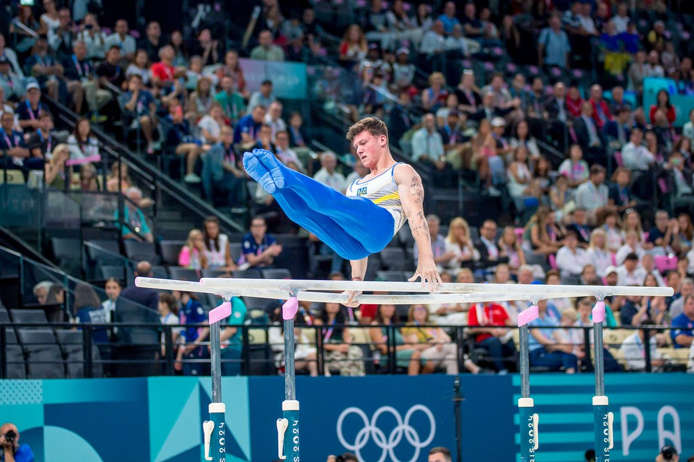

俄罗斯体操新星达尼利·斯米尔诺夫闪耀青奥会，勇夺个人全能金牌
这位17岁的选手在资格赛中仅排名第六，决赛中以81.298分在达喀尔夺冠，并获得奥运冠军尼基塔·纳戈尔内的称赞。

俄罗斯体操运动员达尼利·斯米尔诺夫于2026年11月10日（星期二）在达喀尔青年奥运会上以81.298分夺得男子个人全能金牌。
据Sportmail报道，英国选手乌宰尔·乔杜里以79.132分获得银牌，日本选手Ikki Nishihara以79.065分获得铜牌。据新华社报道，中国选手Yang Lanbin以78.465分名列第四。斯米尔诺夫在资格赛中因单杠掉落，仅以76.764分排名第六，乔杜里则在资格赛中排名第一。
赛后接受《体育快报》采访时，斯米尔诺夫表示自己在决赛中完全没有紧张。他对塔斯社说：“现在我将尽一切努力参加洛杉矶奥运会。”据塔斯社和Sportmail报道，由13人组成的俄罗斯代表团在达喀尔以本国国旗和国歌参赛。

奥运冠军的称赞
奥运冠军尼基塔·纳戈尔内对这场胜利给予高度评价。据Match TV报道，纳戈尔内表示，这样的胜利会伴随运动员一生。
本届青奥会的其他比赛
在混合团体赛中，斯米尔诺夫与波琳娜·德米特里耶娃搭档，他再次从单杠上掉落，两人最终名列第12位，Sportmail报道称。
这位17岁的选手以欧洲青年冠军的身份来到达喀尔。据欧洲体操联盟报道，2026年8月在萨格勒布，他以81.065分夺得青年组全能冠军，仅以0.001分的优势力压乌克兰选手沃洛季米尔·戈洛温。